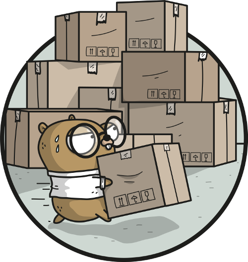

Designing Command-Line Tools People Love

Carolyn Van Slyck
Senior Software Engineer at Microsoft
Often CLIs aren't designed,
functionality is added through happenstance
Design Goals
- Predictable
- Task oriented commands
- Friendly to both humans and scripts
- Creates an SDK as a side-effect
- New contributor launchpad
Introductions
Docker Version Manager
dep
Porter
🐘 ☠️
Thank you

Gopher artwork by Ashley McNamara
licensed under the Creative Commons Attribution-NonCommercial-ShareAlike 4.0 License